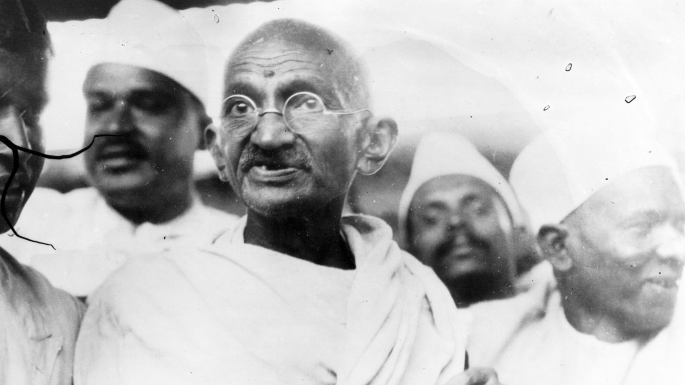

Mohandas Karamchand Gandhi (/ˈɡɑːndi, ˈɡændi/;[2] 2 October 1869 – 30 January 1948) was an Indian lawyer,[3] anti-colonial nationalist,[4] and political ethicist,[5] who employed nonviolent resistance to lead the successful campaign for India's independence from British Rule,[6] and in turn inspire movements for civil rights and freedom across the world. The honorific Mahātmā (Sanskrit: "great-souled", "venerable"), first applied to him in 1914 in South Africa, is now used throughout the world.[7][8]

Born and raised in a Hindu family in coastal Gujarat, western India, Gandhi was trained in law at the Inner Temple, London, and called to the bar at age 22 in June 1891. After two uncertain years in India, where he was unable to start a successful law practice, he moved to South Africa in 1893 to represent an Indian merchant in a lawsuit. He went on to stay for 21 years. It was in South Africa that Gandhi raised a family, and first employed nonviolent resistance in a campaign for civil rights. In 1915, aged 45, he returned to India. He set about organising peasants, farmers, and urban labourers to protest against excessive land-tax and discrimination. Assuming leadership of the Indian National Congress in 1921, Gandhi led nationwide campaigns for easing poverty, expanding women's rights, building religious and ethnic amity, ending untouchability, and above all for achieving Swaraj or self-rule.[9]
The same year Gandhi adopted the Indian loincloth, or short dhoti and, in the winter, a shawl, both woven with yarn hand-spun on a traditional Indian spinning wheel, or charkha, as a mark of identification with India's rural poor. Thereafter, he lived modestly in a self-sufficient residential community, ate simple vegetarian food, and undertook long fasts as a means of self-purification and political protest. Bringing anti-colonial nationalism to the common Indians, Gandhi led them in challenging the British-imposed salt tax with the 400 km (250 mi) Dandi Salt March in 1930, and later in calling for the British to Quit India in 1942. He was imprisoned for many years, upon many occasions, in both South Africa and India..
His time in London was influenced by the vow he had made to his mother. He tried to adopt "English" customs, including taking dancing lessons. However, he could not appreciate the bland vegetarian food offered by his landlady and was frequently hungry until he found one of London's few vegetarian restaurants. Influenced by Henry Salt's writing, he joined the London Vegetarian Society and was elected to its executive committee[57] under the aegis of its president and benefactor Arnold Hills. An achievement while on the committee was the establishment of a Bayswater chapter.[26] Some of the vegetarians he met were members of the Theosophical Society, which had been founded in 1875 to further universal brotherhood, and which was devoted to the study of Buddhist and Hindu literature. They encouraged Gandhi to join them in reading the Bhagavad Gita both in translation as well as in the original.[57]
Gandhi had a friendly and productive relationship with Hills, but the two men took a different view on the continued LVS membership of fellow committee member Dr Thomas Allinson. Their disagreement is the first known example of Gandhi challenging authority, despite his shyness and temperamental disinclination towards confrontation.
Allinson had been promoting newly available birth control methods, but Hills disapproved of these, believing they undermined public morality. He believed vegetarianism to be a moral movement and that Allinson should therefore no longer remain a member of the LVS. Gandhi shared Hills views on the dangers of birth control, but defended Allinson's right to differ.[58] It would have been hard for Gandhi to challenge Hills; Hills was 12 years his senior and unlike Gandhi, highly eloquent. He bankrolled the LVS and was a captain of industry with his Thames Ironworks company employing more than 6,000 people in the East End of London. He was also a highly accomplished sportsman who would go on to found the football club West Ham United.
The question deeply interested me...I had a high regard for Mr. Hills and his generosity. But I thought it was quite improper to exclude a man from a vegetarian society simply because he refused to regard puritan morals as one of the objects of the society[59]
A motion to remove Allinson was raised, and was debated and voted on by the committee. Gandhi’s shyness was an obstacle to his defence of Allinson at the committee meeting. He wrote his views down on paper but shyness prevented him reading out his arguments, so Hills, the President, asked another committee member to read them out for him. Although some other members of the committee agreed with Gandhi, the vote was lost and Allinson excluded. There were no hard feelings, with Hills proposing the toast at the LVS farewell dinner in honour of Gandhi’s return to India.[60]